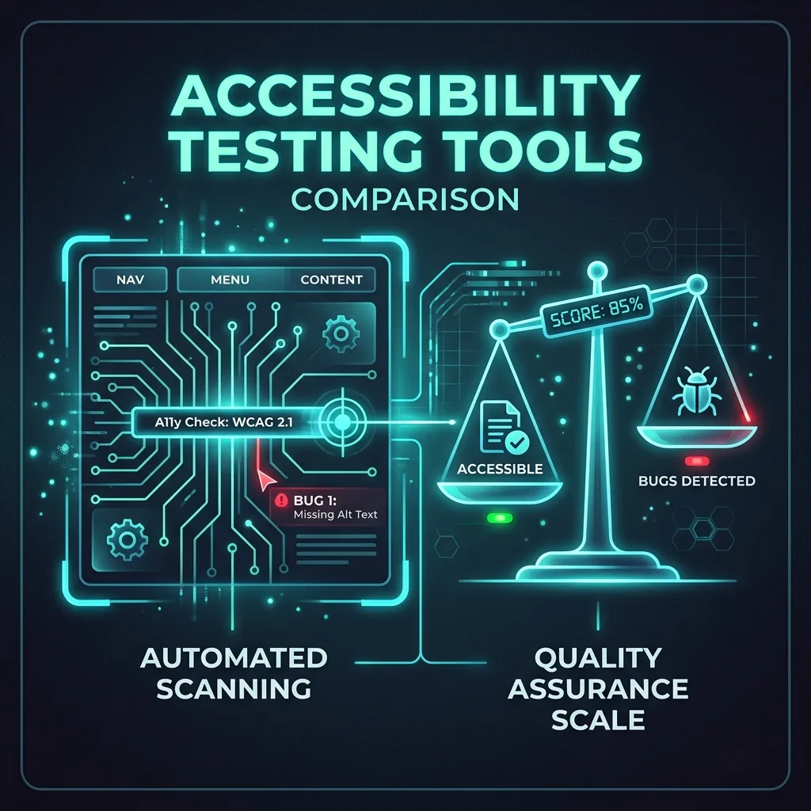

Comparativa de herramientas de testing: axe-core vs ARC Toolkit
Análisis detallado de las ventajas y casos de uso ideales para dos de las herramientas más potentes del mercado en la identificación automatizada de barreras digitales.

Las herramientas automatizadas son el primer nivel de defensa en cualquier estrategia "Shift Left", capaces de capturar entre el 30% y el 50% de los errores totales de accesibilidad (WCAG). En este artículo, ponemos frente a frente a dos gigantes de la industria: axe-core de Deque Systems y ARC Toolkit de TPGi.
Axe-Core: El Rey de la Integración (CI/CD)
El mayor superpoder de axe-core es su API extremadamente amigable para desarrolladores. Al estar construido puramente en JavaScript, puede inyectarse en Cypress, Selenium, Jest, Pa11y y, mi favorito personal, Playwright. Esto permite romper los despliegues si la interfaz de usuario introduce regresiones de accesibilidad.
const { test, expect } = require('@playwright/test');
const AxeBuilder = require('@axe-core/playwright').default;
test('Debe cumplir WCAG 2.2 AA', async ({ page }) => {
await page.goto('https://ejemplo.com');
const accessibilityScanResults = await new AxeBuilder({ page })
.withTags(['wcag2a', 'wcag2aa', 'wcag22aa'])
.analyze();
expect(accessibilityScanResults.violations).toEqual([]);
});Al arrojar un error por cada violación encontrada, axe-core educa activamente al equipo de desarrollo mientras escriben el código.
ARC Toolkit: Auditoría Visual Profunda
Mientras que axe-core brilla en la terminal, ARC Toolkit (una extensión del navegador) brilla en la pantalla. Esta herramienta destaca por su capacidad de inyectar estilos visuales en el DOM para mostrar el orden lógico de lectura, destacar contenedores sin regiones ARIA y verificar el espaciado y el flujo estructural visualmente.
El Veredicto
No tienes que elegir una sola. La mejor estrategia es usar axe-core en los pipelines automatizados para evitar que código inaccesible llegue a producción, y utilizar ARC Toolkit de manera exploratoria por los QA de accesibilidad para identificar problemas estructurales que la automatización pura pasaría por alto.